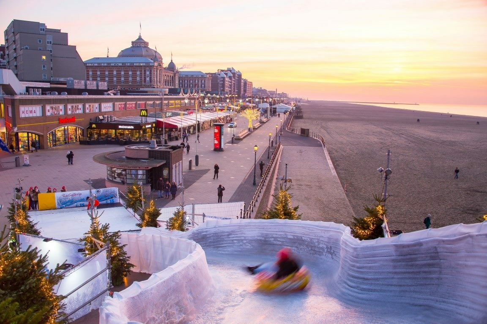
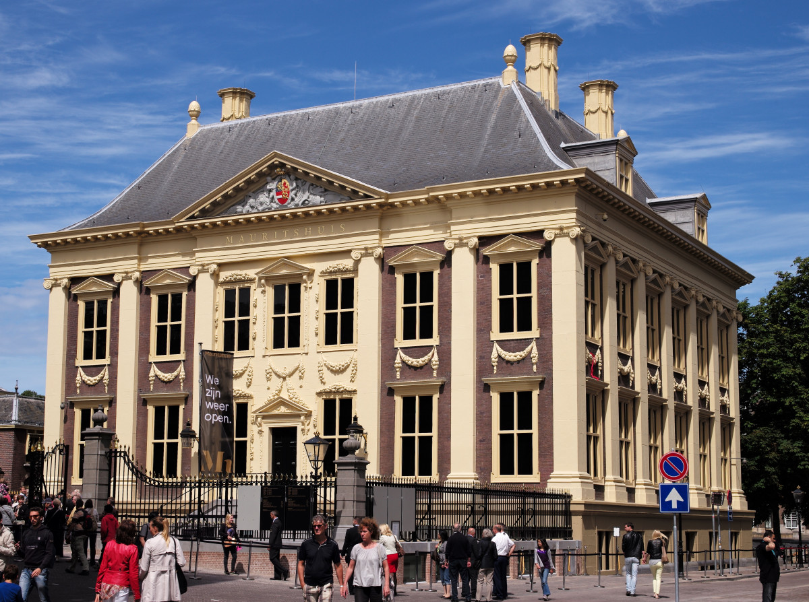

 Deze winter is de Haagse badplaats Scheveningen weer dé plek voor de ultieme wintersportervaring aan zee. Voor de 14e keer wordt Cool Event Scheveningen georganiseerd met een overdekte ijsbaan van maar liefst 600m2 op het Kurhausplein. Kom op 12 november tussen 13 uur en 17 uur naar de spetterende opening van het Coolevent. De schaatsbaan wordt met vuur, ijsspellen en entertainment geopend.
Kurhausplein on Ice - Schaatsbaan Op de 600 m2 overdekte ijsbaan voor het Kurhaus in Scheveningen kan jong en oud tussen 12 november 2022 en 22 januari 2023 schaatsen. De toegangsprijs voor Kurhaus on Ice schaatsbaan 6,50 euro, incl. schaatshuur 11,00 euro. Let op: noren worden niet toegelaten op de schaatsbaan in verband met de veiligheid. Handschoenen zijn verplicht.
Kleine schaatsbaan - Boulevard Naast de grote schaatsbaan op het Kurhausplein zal er van zaterdag 10 december tot en met zondag 8 januari 2023 ook een kleine schaatsbaan te vinden zijn op de boulevard.
(IJs) spektakel bij het Cool Event Op 13 en 14 januari geniet je van een betoverende solo schaatsshow en van de schaatsers met verlichte vleugels. Twee shows achter elkaar, om 17:30 uur en 19:00 uur. Tijdens deze avonden zijn ook de spectaculaire metersgrote vliegers te bewonderen vanaf de boulevard.
IJssculpturen Van vrijdag 2 december t/m zondag 22 januari 2023 ijssculpturen op de boulevard van Scheveningen. Bewonder de sprookjesachtige sculpturen en zie hoe de kunstwerken gemaakt worden, maar ga ook zelf aan de slag.
De vaandeldrager van Rembrandt, een meesterwerk dat na honderden jaren weer in Nederlands bezit is. En om dat te vieren, reist het schilderij een jaar lang door Nederland. De hele maand november kun je het schilderij in het Mauritshuis komen bewonderen.
Ambitieus meesterstuk De vaandeldrager kwam tot stand in 1636, het jaar waarin Rembrandt net voor zichzelf was begonnen. Daaraan voorafgaand had hij vijf jaar lang portretten geschilderd voor kunsthandelaar Hendrick Uylenburgh. Het mag duidelijk zijn dat de jonge schilder met De vaandeldrager wilde laten zien wat hij kon, het is een ambitieus meesterstuk. De schildertoets is los, het licht-donker contrast is zo sterk dat het lijkt of de krijger in een schijnwerper staat. Met zijn krijgshaftige walrussnor, zijn dolk en zwaard is het duidelijk dat er niet met hem te spotten valt. Maar het belangrijkste dat hij bij zich heeft is de grote witte vlag. Het dragen van het vaandel was één van de eervolste functies in het leger en de schutterij. De vaandeldrager is gehuld in ouderwetse, 16de-eeuwse kleding, die in die tijd al niet meer werd gedragen. Daarmee maakt Rembrandt deze vaandeldrager tot een historische figuur.
Het volgende museum dat De vaandeldrager zal aandoen is Rijksmuseum Twenthe in Enschede. Na de rondreis (31 juli 2023) is het schilderij blijvend te bewonderen op de Eregalerij van het Rijksmuseum.
13 Rembrandts Het Mauritshuis heeft in november maar liefst 13 Rembrandts in huis, 11 uit eigen collectie, het beroemde zelfportret van Rembrandt uit 1658 en De vaandeldrager. Het zelfportret van Rembrandt is voor de tentoonstelling Manhattan Masters tot 15 januari uitgeleend door The Frick Collection in New York.